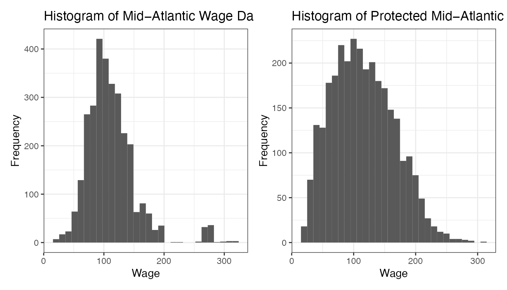

The dress package provides some measures for disclosure
risk associated with the release of protected data, irrespective of what
mechanism was used to protect it. Key principles of the disclosure
framework include distinctness, accuracy and undeniability. This method
can be applied to any pair of original and protected data-sets despite a
difference in dimensionality and without assuming any particular joint
probability structure between the original and protected data. In the
dress::wage4 and dress::wage4_protecteddata
sets, which have 4 variables: “age”, “education”, “jobclass” and “wage”,
suppose we wanted to measure the disclosure risk between the
Mid−Atlantic Wage data and the protected wages data, theoretically using
an acceptance margin of 5% i.e. if our guess is within ±5% of the true
wage we consider it a disclosure. The summary and wage distribution for
each dataset is shown below.
summary(wage4)
#> age education jobclass
#> Min. :18.00 1. < HS Grad :268 1. Industrial :1544
#> 1st Qu.:33.75 2. HS Grad :971 2. Information:1456
#> Median :42.00 3. Some College :650
#> Mean :42.41 4. College Grad :685
#> 3rd Qu.:51.00 5. Advanced Degree:426
#> Max. :80.00
#> wage
#> Min. : 20.09
#> 1st Qu.: 85.38
#> Median :104.92
#> Mean :111.70
#> 3rd Qu.:128.68
#> Max. :318.34
summary(wage4_protected)
#> age education jobclass
#> Min. :18.18 1. < HS Grad : 290 1. Industrial :1585
#> 1st Qu.:32.77 2. HS Grad :1037 2. Information:1415
#> Median :41.57 3. Some College : 681
#> Mean :42.35 4. College Grad : 644
#> 3rd Qu.:51.25 5. Advanced Degree: 348
#> Max. :79.09
#> wage
#> Min. : 20.42
#> 1st Qu.: 76.84
#> Median :111.21
#> Mean :115.41
#> 3rd Qu.:150.22
#> Max. :310.07
wage4 %>% ggplot() + geom_histogram(aes(wage)) + labs(title="Histogram of Mid−Atlantic Wage Data",x="Wage",y="Frequency") + theme_bw() + wage4_protected %>% ggplot() + geom_histogram(aes(wage)) + labs(title="Histogram of Protected Mid−Atlantic Wage Data",x="Wage",y="Frequency") + theme_bw()
#> `stat_bin()` using `bins = 30`. Pick better value with `binwidth`.
#> `stat_bin()` using `bins = 30`. Pick better value with `binwidth`. If we were to release to the public that the mode of this data is approximately 97, we can link the wage information of 402 individuals. This means that if we were to use 97 as an estimate for any randomly selected wage, then 13.4% of all observations (as there is 3000 observations in this data-set) would be deemed to be correctly identified.However, using the notion of plausible deniability(Dwork, 2006) — the greater the density of observations within a particular region of our sample space, the harder it is we can use this estimate to distinguish this observation from other observations in the space — we will limit our notion of disclosure to distinct points, points which we have defined to be distinguishable from others or points which violate our k-anonymity criteria.
Definition 1. Given a release of information, notated as some function \(\tau\) (\(D_X\)) of a data- set DX. We say that \(\tau\) has disclosed an observation x0 ∈ DX, if the following conditions have been satisfied: (1) The observation \(x_0\) is distinct in \(D_X\). The term distinct refers to the notion, that given the original data-set was released, this observation is not indistinguishable from other observations based on some k-anonymity criteria. This is similar to ensuring that the characteristic under consideration (the micro-data value) is actually sensitive. (2) Given \(\tau\) (\(D_X\)) we can obtain an estimate \(\hat{x_0}\)which is a good estimate of the observation \(x_0\) Where the term good estimate refers to any estimator which reasonably (according to the preferences of the data agency) represents the observation \(x_0\) This is similar to the notion that inference can be made on this sensitive characteristic. (3) Given a good estimate \(\hat{x_0}\) of the observation \(x_0\) then the set \(G_{\hat{x_0}}\) = {x \(\in\) \(D_X\) : \(\hat{x_0}\) is a good estimate of x} has less elements than a plausibly deniable amount of other observations. That is, given we know \(\hat{x_0}\) is a good estimate, then we cannot plausibly deny that this estimator corresponds to \(x_0\)
More simply put in order to have a disclosure we need the observation value to be a sensitive characteristic (something likely pertaining to the individual only) within our original data-set (distinct), we need to be able to properly estimate this observation based on the release of information (accurately estimated) and we need our estimate to be able to be attributed with this observation with some level of certainty (undeniable). Moreover, it generally measures disclosure in such a way that we can have certainty about the risk for even the maximum- knowledge-intruder scenario (Ruiz et al., 2018) and protects the statistical utility of the released data set.
The primary results from drscore are given as Linkcounts
and Linkscore. Linkcounts has all the key combinations of categorical
variables and numeral differences between the two data sets and
potential matches such as outliers. Linkscore is the overall disclosure
risk and other proportions that we’d like to estimate — distinct,
accurately estimated and undeniable.
library(svMisc)
library(dress)
library(sdcMicro)
# ##################
# ##all continuous###################
CASC_sample <- CASCrefmicrodata[,c(2,3,4,6)]
CASC_protected <- addNoise(CASC_sample,noise = 100)$xm #Additive Noise protected
DRisk_NN <- drscore(
Sample = CASC_sample, #Original Sample
Protected = CASC_protected,
delta = 0.05,
kdistinct = 0.05, #k distinct threshold if integer then
# probability threshold is k/SS (SS = sample size)
ldeniable = 5, # l undeniable threshold if integer then
# probability threshold is l/SS (SS = sample size)
neighbourhood = 1,
#Possible 'neighbourhood' types
# 1 = Mahalanobis (Based on Mahalanobis Distance)
# 2 = DSTAR (Based on Density Based Distance)
# 3 = StdEuclid (Based on Standardised (by std dev) Euclidean Distance)
# 4 = RelEuclid (Relative Euclidean Distance sum_k ((Xk-Yk)/Xk)^2)
neigh_type = 'prob',
#Possible 'neigh_type' types
#constant = fixed threshold on distance
#prob = Nearest Neighbour Probability Neighbourhood used (Worst Case Scenario 1)
#estprob = = Nearest Neighbour Probability Neighbourhood used based on protected density (Worst Case Scenario 2)
numeric.vars = 1:4, #Which Variables are continuous?
outlier.par = list(centre = median,
scale = var,
thresh = 0.01)
#Parameters to adjust how MV outliers are determined.
#Default is that lie 99% (based on Chi-Square n-1 dist) away from median after scale by variance.
)
#>
#> ######################################################################
#> # Disclosure Risk Assessment #
#> ######################################################################
#> Nearest Neighbour Neighbourhood with parameters:
#> delta = 0.05, kdistinct = 0.05, ldeniable = 0.00462962962962963.
#>
#> Number of Observations in the Sample 1080
#> Number of Observations in the Protected Sample 1080
#> Number of Continuous Variables 4
#> Number of Key Categories 1
#> Number of Outliers in Sample 38
#> Number of Distinct Points in Sample 1080
#> Number of Distinct Outliers in Sample 38
#> Number of Exact Matches in Sample 0
#> Number of Interval Matches in Sample 0
#> Number of Outlier Interval Matches in Sample 0
#> Number of Distint Outlier Interval Matches in Sample 0
#>
#> Delta Disclosure Risk of Sample 0.1056
#> Delta Disclosure Risk of Sample Outliers 0.7105
#> Proportion Distinct 1
#> Proportion Estimated 0.95
#> Proportion Undeniable 0.1056
#>
#> Category Level Disclosure Risk:
#>
#> N.Obs DRisk Out_DRisk Distinct Estimated Undeniable
#> All 1080 0.1055556 0.025 1 0.95 0.1055556
#Update neighbourhood to fixed threshold definition
DRisk_Fxd <- update(DRisk_NN,neigh_type = 'constant',
delta = 1)
#>
#> ######################################################################
#> # Disclosure Risk Assessment #
#> ######################################################################
#> Threshold Neighbourhood with parameters:
#> delta = 1, kdistinct = 0.05, ldeniable = 0.00462962962962963.
#>
#> Number of Observations in the Sample 1080
#> Number of Observations in the Protected Sample 1080
#> Number of Continuous Variables 4
#> Number of Key Categories 1
#> Number of Outliers in Sample 38
#> Number of Distinct Points in Sample 642
#> Number of Distinct Outliers in Sample 38
#> Number of Exact Matches in Sample 0
#> Number of Interval Matches in Sample 8
#> Number of Outlier Interval Matches in Sample 0
#> Number of Distint Outlier Interval Matches in Sample 0
#>
#> Delta Disclosure Risk of Sample 0.1537
#> Delta Disclosure Risk of Sample Outliers 0.2895
#> Proportion Distinct 0.5944
#> Proportion Estimated 0.9444
#> Proportion Undeniable 0.1574
#>
#> Category Level Disclosure Risk:
#>
#> N.Obs DRisk Out_DRisk Distinct Estimated Undeniable
#> All 1080 0.1537037 0.01018519 0.5944444 0.9444444 0.1574074
########################
## mixed dataset
########################
nn <- drscore(Sample = wage4, Protected = wage4_protected, numeric.vars = c(1,4))
#>
#> ######################################################################
#> # Disclosure Risk Assessment #
#> ######################################################################
#> Threshold Neighbourhood with parameters:
#> delta = 0.05, kdistinct = 0.00166666666666667, ldeniable = 0.00166666666666667.
#>
#> Number of Observations in the Sample 3000
#> Number of Observations in the Protected Sample 3000
#> Number of Continuous Variables 2
#> Number of Key Categories 10
#> Number of Outliers in Sample 59
#> Number of Distinct Points in Sample 28
#> Number of Distinct Outliers in Sample 6
#> Number of Exact Matches in Sample 0
#> Number of Interval Matches in Sample 51
#> Number of Outlier Interval Matches in Sample 3
#> Number of Distint Outlier Interval Matches in Sample 0
#>
#> Delta Disclosure Risk of Sample 0.0063
#> Delta Disclosure Risk of Sample Outliers 0.0339
#> Proportion Distinct 0.0093
#> Proportion Estimated 0.8967
#> Proportion Undeniable 0.0113
#>
#> Category Level Disclosure Risk:
#>
#> N.Obs DRisk Out_DRisk Distinct
#> 1. < HS Grad2. Information 78 0.00000000 0.000000000 0.00000000
#> 5. Advanced Degree1. Industrial 102 0.00000000 0.000000000 0.00000000
#> 1. < HS Grad1. Industrial 190 0.00000000 0.000000000 0.00000000
#> 4. College Grad1. Industrial 274 0.00000000 0.000000000 0.00000000
#> 3. Some College2. Information 308 0.00000000 0.000000000 0.00000000
#> 5. Advanced Degree2. Information 324 0.00000000 0.000000000 0.00000000
#> 2. HS Grad2. Information 335 0.00000000 0.000000000 0.00000000
#> 3. Some College1. Industrial 342 0.00000000 0.000000000 0.00000000
#> 4. College Grad2. Information 411 0.00000000 0.000000000 0.00000000
#> 2. HS Grad1. Industrial 636 0.02987421 0.003144654 0.04402516
#> Estimated Undeniable
#> 1. < HS Grad2. Information 0.5769231 0.00000000
#> 5. Advanced Degree1. Industrial 0.5294118 0.00000000
#> 1. < HS Grad1. Industrial 0.8789474 0.00000000
#> 4. College Grad1. Industrial 0.8978102 0.00000000
#> 3. Some College2. Information 0.9350649 0.00000000
#> 5. Advanced Degree2. Information 0.7746914 0.00000000
#> 2. HS Grad2. Information 0.9641791 0.00000000
#> 3. Some College1. Industrial 0.9473684 0.00000000
#> 4. College Grad2. Information 0.9002433 0.00000000
#> 2. HS Grad1. Industrial 0.9779874 0.05345912
nn$Linkcounts
#> Values
#> Number of Observations in the Sample 3000
#> Number of Observations in the Protected Sample 3000
#> Number of Continuous Variables 2
#> Number of Key Categories 10
#> Number of Outliers in Sample 59
#> Number of Distinct Points in Sample 28
#> Number of Distinct Outliers in Sample 6
#> Number of Exact Matches in Sample 0
#> Number of Interval Matches in Sample 51
#> Number of Outlier Interval Matches in Sample 3
#> Number of Distint Outlier Interval Matches in Sample 0
nn$Linkscore
#> Values
#> Delta Disclosure Risk of Sample 0.006333333
#> Delta Disclosure Risk of Sample Outliers 0.033898305
#> Proportion Distinct 0.009333333
#> Proportion Estimated 0.896666667
#> Proportion Undeniable 0.011333333Two widely used distances used in this package are Mahalanobis Distance and Euclidean Distance. These distances are specified by the user. When not fully specified, the unspecified parameters will be default as below.
drscore <-
function(
Sample,
Protected,
delta = 0.05,
neighbourhood = 1,
kdistinct = 5,
ldeniable = kdistinct,
neigh_type = 'constant',
numeric.vars = NULL,
outlier.par = list(centre = median,
scale = var,
thresh = 0.01)
)Finally it is important to accept when it comes to understanding the disclosure risk of any release of data, a single measurement or parameter will never really be sufficient in itself to adequately represent the entire risk of disclosure that said release of information represents. The varying ways in which disclosure can happen through attribute properties, inferential properties and value estimation are often extremely complex and need to be treated as such. Nevertheless, the disclosure risk framework we propose can still be a useful tool in measuring disclosure risk by providing a more formalised and general approach to understanding disclosure.
More information about mathematics behind measuring the disclosure risk can be found in the paper On the Disclosure Risk Framework for Micro-Level Data and in the pkgdown site.